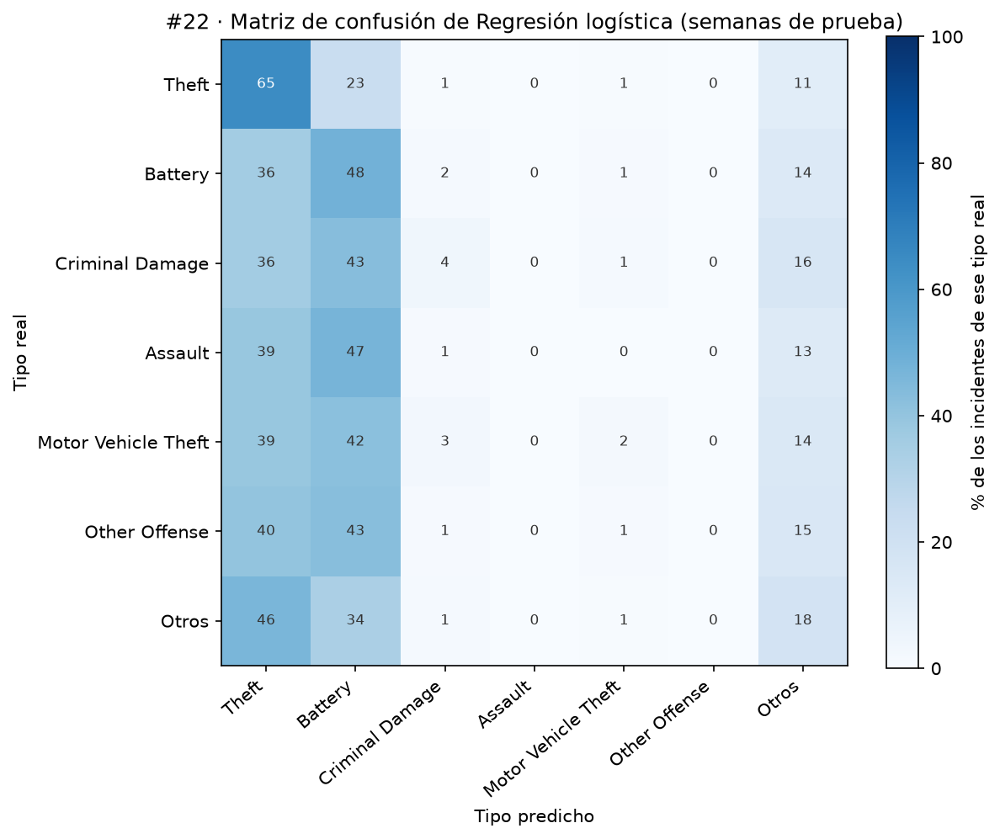

Pregunta 1
¿En qué zonas se concentran los delitos?
En el centro, el oeste y el sur (distritos 8, 12, 1, 6 y 18). El 10 % de las celdas de 500 m concentra el 35.6 % de los incidentes.
Con los datos abiertos de la policía de Chicago y un clúster de Hadoop y Spark en AWS, predecimos cuántos incidentes habrá la próxima semana en cada zona de patrullaje y bloque de 6 horas, para saber a qué zonas mandar más patrullas.
Cada polígono es un beat. Elige una de las 10 semanas de prueba de 2025 y un turno para comparar lo que predijo Random Forest con los incidentes que de verdad hubo. Con borde naranja están las zonas-turno que el modelo señaló: el 10 % con la predicción más alta de esa semana.
La pregunta del proyecto (en qué zonas, días y horarios es más probable un delito, y de qué tipo) la partimos en cinco, una por gráfica. Todas salen de la capa processed del data lake.
Los porcentajes de cada tarjeta son de 2025.
En el centro, el oeste y el sur (distritos 8, 12, 1, 6 y 18). El 10 % de las celdas de 500 m concentra el 35.6 % de los incidentes.
El 10 % de las zonas-turno más activas concentra el 20.4 % de los incidentes. La mitad menos activa, el 32.1 %.
Por la tarde, con el pico a las 15:00, y en la madrugada del sábado y el domingo. El 60.7 % ocurre entre el mediodía y la medianoche.
Robo sin violencia (23.2 %), agresión física (17.9 %) y daño a la propiedad (11.0 %) suman más de la mitad.
En verano hay 9 % más incidentes. Con los cuatro años se ve que 2023 y 2024 tuvieron más que 2025, por eso promediar toda la historia sobreestima el final de 2025.
Todos se prueban con las mismas semanas: de la 42 a la 51 de 2025. La captura es el porcentaje de incidentes que cae en el 10 % de zonas-turno que señala cada modelo; si se supiera el futuro, el máximo sería 26 %.
Random Forest y GBT de SparkML contra dos reglas simples.
| Modelo | RMSE | MAE | R² | Captura | PAI |
|---|---|---|---|---|---|
| Promedio histórico de la zona-turno | 2.101 | 1.614 | 0.372 | 20.0 % | 2.00 |
| Random Forest (elegido) | 2.117 | 1.642 | 0.363 | 19.8 % | 1.98 |
| GBT | 2.132 | 1.655 | 0.354 | 19.8 % | 1.98 |
| Promedio de 4 semanas (línea base) | 2.259 | 1.722 | 0.275 | 19.0 % | 1.90 |
Random Forest le gana a la línea base y a GBT, pero no al promedio histórico de cada zona-turno.
El mismo pipeline con 2022 a 2025 (issue #20).
| Modelo | MAE 2025 | MAE 2022–25 | Le gana al histórico |
|---|---|---|---|
| Promedio histórico | 1.614 | 1.661 | — |
| Random Forest | 1.642 | 1.655 | 8 de 10 semanas |
| GBT | 1.655 | 1.666 | 5 de 10 |
| Promedio de 4 semanas | 1.722 | 1.722 | 3 de 10 |
Con más historia el modelo ya le gana a su promedio histórico, pero todo queda peor que con un año: lo que más anticipa una zona es su nivel reciente.
Retrasos de 2 y 52 semanas, estacionalidad, vecinos y festivos (issue #21).
| Modelo | MAE | Captura |
|---|---|---|
| Random Forest con variables nuevas | 1.585 | 19.9 % |
| Promedio de las últimas 52 semanas | 1.609 | 20.0 % |
| Random Forest de la Fase 3 | 1.643 | 19.6 % |
| Promedio histórico | 1.661 | 19.5 % |
Por fin le gana al promedio histórico en las 10 semanas. La variable clave es el promedio de las últimas 52 semanas.
Un clasificador de 7 clases para cada incidente, con lo que se sabe antes de que ocurra (issue #22).
| Modelo | Exactitud | Entre los 2 más probables | Error de la mezcla |
|---|---|---|---|
| Regresión logística | 29.4 % | 48.5 % | 4.66 pts |
| Random Forest | 29.3 % | 48.5 % | — |
| Tipo más frecuente de la zona-turno | 29.1 % | 48.9 % | 4.65 pts |
| Tipo más común de la ciudad | 24.6 % | 44.0 % | 6.44 pts |
Ningún clasificador le gana a la regla de la zona-turno. Lo útil es anticipar la mezcla de tipos de cada zona, no el tipo de un incidente suelto.

Todo corre en una instancia EC2 con Hadoop y Spark, siguiendo un data lake de tres capas. Los notebooks y el diagrama completo de la arquitectura están en el repositorio.
CSV de cada año del portal de datos abiertos, tal cual, en HDFS.
Fechas en UTC, nulos, duplicados y coordenadas atípicas. Tabla Hive chicago.crimes.
Malla beat × turno × semana con ceros y las semanas anteriores como variables.
Random Forest, GBT y regresión logística, probados con las últimas 10 semanas de 2025.
Gráficas en matplotlib y esta página, que lee solo agregados.